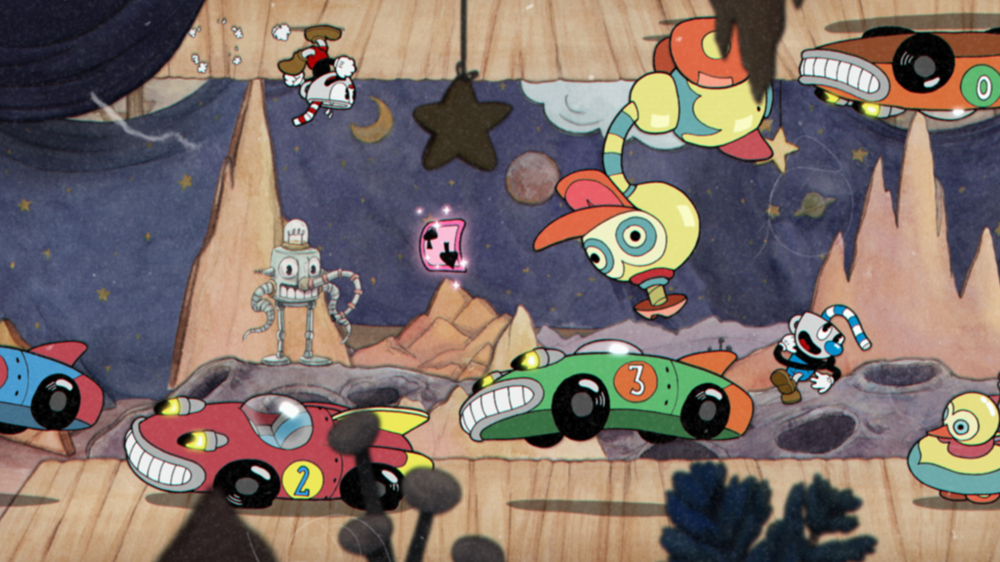

Mecánicas de combate y diseño de jefes finales
La estructura jugable del videojuego Cuphead gira en torno a intensos enfrentamientos contra jefes finales en arenas cerradas, complementados por niveles de plataformas run and gun y mausoleos espectrales. Cada batalla contra un jefe está dividida en múltiples fases donde la apariencia del enemigo, el escenario y los patrones de ataque se transforman de manera progresiva, exigiendo al jugador lectura rápida y precisión (Studio MDHR, 2017).
Una de las mecánicas centrales del sistema de juego es el movimiento Parry (rebote rosa): al pulsar el botón de salto por segunda vez en el aire sobre cualquier proyectil u objeto de color rosado, el personaje lo neutraliza y recarga una carta de su medidor de superpoderes. Esta mecánica convierte la defensa en una herramienta ofensiva indispensable para alcanzar la calificación máxima de rango S (IGN Latinoamérica, 2019).

Composición musical Big Band y Ragtime en vivo
La banda sonora original, compuesta por el músico canadiense Kristofer Maddigan, es un pilar esencial de la experiencia interactiva. En lugar de recurrir a instrumentos virtuales sintetizados, Studio MDHR grabó en estudio a una orquesta de jazz estilo Big Band integrada por 43 músicos profesionales, además de solistas de piano ragtime y percusión clásica, produciendo casi tres horas de música original (Maddigan, 2017).
Cada pieza musical fue escrita específicamente para reflejar el temperamento y la velocidad de cada jefe de las islas Inkwell, funcionando como un metrónomo natural que ayuda al jugador a anticipar el ritmo de los ataques durante los combates más exigentes (Schreier, 2017).